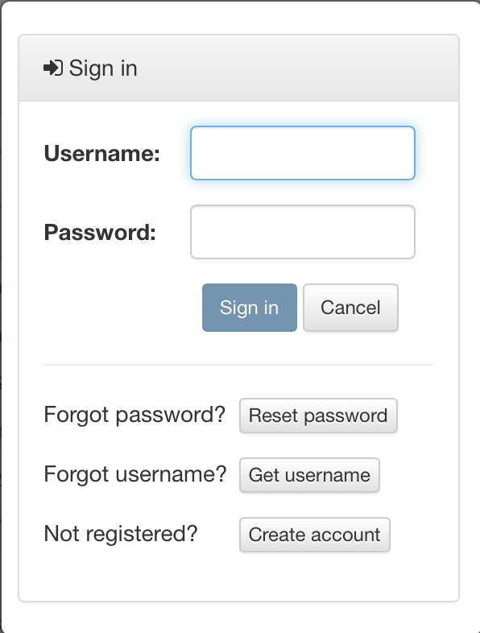
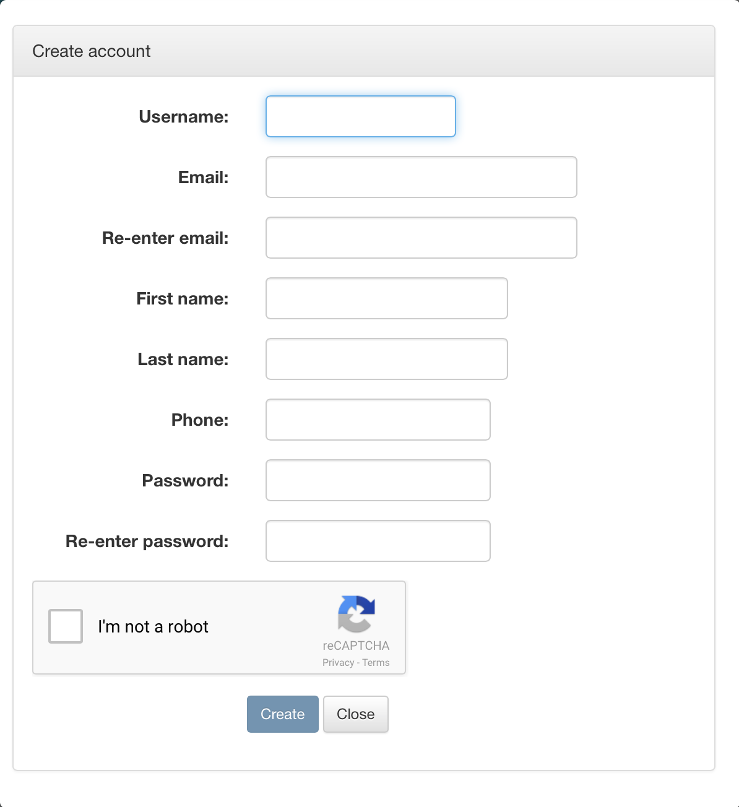
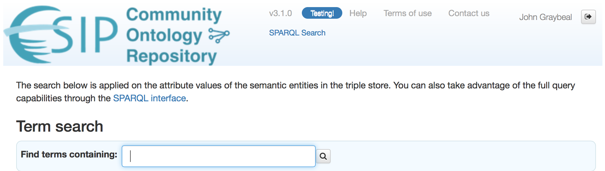
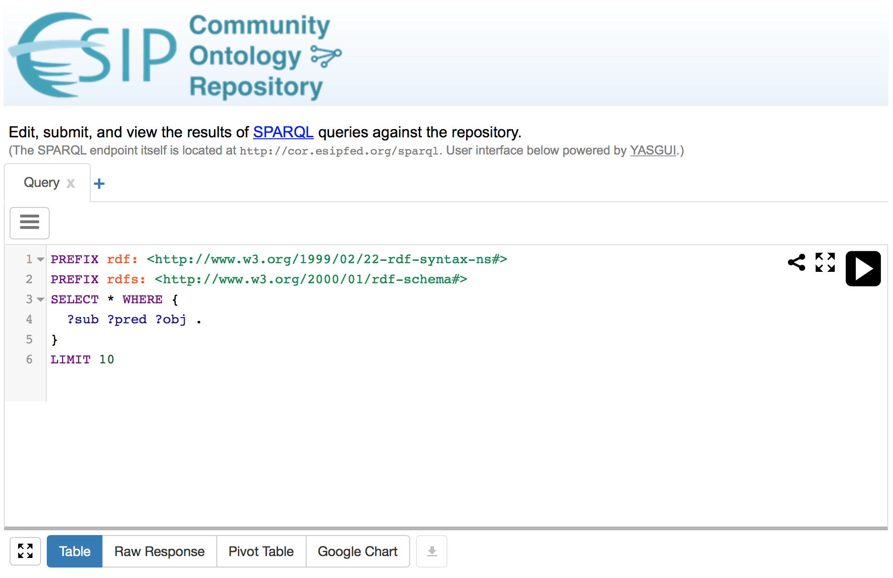

Getting Started
Tip
The screen shots in this presentation are made using the ESIP COR instance.
1. Initial Access¶
1-A. Open the desired ORR site in your browser
- MMI ORR browse page: https://mmisw.org/ont/
- ESIP COR browse page: http://cor.esipfed.org/ont/
- X-DOMES ORR browse page: https://xdomes.org/ont/
 1-B. Log in
You can access all publicly visible ontologies (see next section) without logging in. To change content, or see ontologies private to you or your group listed in the browse page, you must log in. (If you do not have an account, see 1-C. Create an account below.)
If you are not yet signed in, click the "Sign in" link in the main ORR page, and enter your account information.
1-C. Create an account

If you do not have an account and want to log in, click the "Create account" link in the main ORR page, and fill out the form.
The telephone number is required, but is only used to assist in the operation of the repository.
2. Using existing semantic data¶
2-A. Browse list of registered ontologies
Even if not signed in, you will see all public registered ontologies in the main ORR browse page. You will not see those ontologies that are marked as Visibility="owner" (which are only visible to the submitter in the browse page. If you are the submitter, log in to see the non-public ontologies you submitted.)
The left-hand side tree widget allows you to select the entries in the ontology table according to these criteria:
- owner (the organization or user owning the ontology),
- status (testing, unstable, draft, stable, deprecated, or archaic),
- resource type (selected by the ontology submitter),
- type of hosting (fully-hosted, or re-hosted), and
- submitter (if you are signed in as an admin).
In the owner section you can select the "Most recent ontology" checkbox to only include the most recent submission by owner.
You can control which columns are visible using the 'hamburger' selector on the right. You can also click any column header in the table to sort the list by that column, or invert that column's sort order. Hold down the mouse button to see a delete option if available.
2-B. Explore contents of an ontology
Click an entry in the browse table to explore a particular ontology.
The main operations available when viewing an ontology are:
-
Search for any combination of subject, predicate, and object using the Data search fields.
-
Copy the ontology's IRI to the clipboard, using the button with the clipboard icon.
-
View or download the ontology in chosen formats. The formats are RDF/XML, JSON-LD, N3, Turtle, N-Triples, and RDF/JSON. (The selection effect of either view or download varies across browsers.)
-
View list of versions of the ontology: click the "Versions" button.
-
Viewing the metadata details in the various categories shown in the tabs.
If you are an owner of the original ontology, you have additional options:
-
Change the Status of the ontology.
-
Change the Visibility of the ontology in the main browse page (either owner-only, or publicly visible). Note that all ontologies, even owner-only, can still be viewed by anyone having the IRI.
-
Create a new version (if you or your group submitted the original ontology): Click the "Edit new version" button to start creating a new version of the ontology. For ontologies created with any of the integrated ORR tools (vocabulary editor or mapping editor), the corresponding interface will be displayed to create the new version. For all others, you will have the option to either edit the metadata or upload a new file.
2-C. Search for term
To search for a term across all ontologies, from the main ORR page or any ontology page, click the "Term Search" link. You will see a page that looks like the following:

The given string will be searched exactly as typed, ignoring case, across all property values in the latest version of each registered ontology. Multiple terms separated by spaces must all be matched. You can use "OR" or "|" to indicate alternate search strings.
2-D. Perform a SPARQL query
Also in the main ORR page or any ontology page, click the "SPARQL query" link. You will see a page that looks like the following:

This page provides an interface that lets you enter sample SPARQL queries, or your own customized queries. For more information, see Querying via SPARQL API.
A REST API interface is also available for discovering ontology content. See Querying via REST API for details.
3. Providing semantic content¶
You may be adding an ontology -- that is, a file in RDF, OWL, or similar form -- or a vocabulary, for example in a text file, or that you want to create manually. Choose the appropriate link below for your situation.